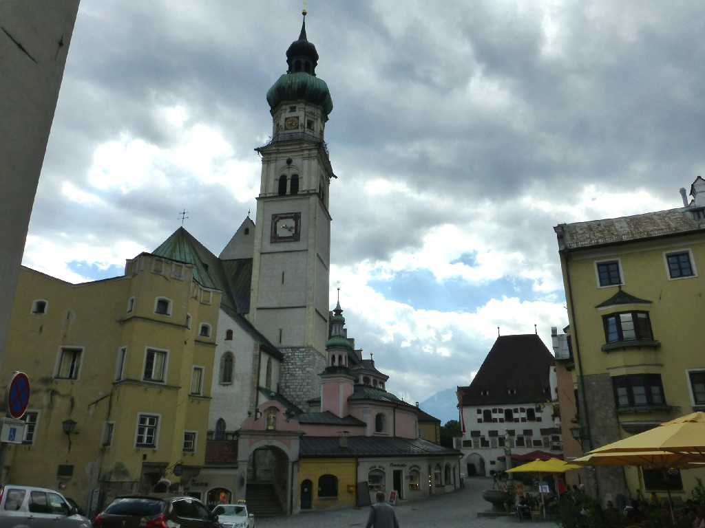
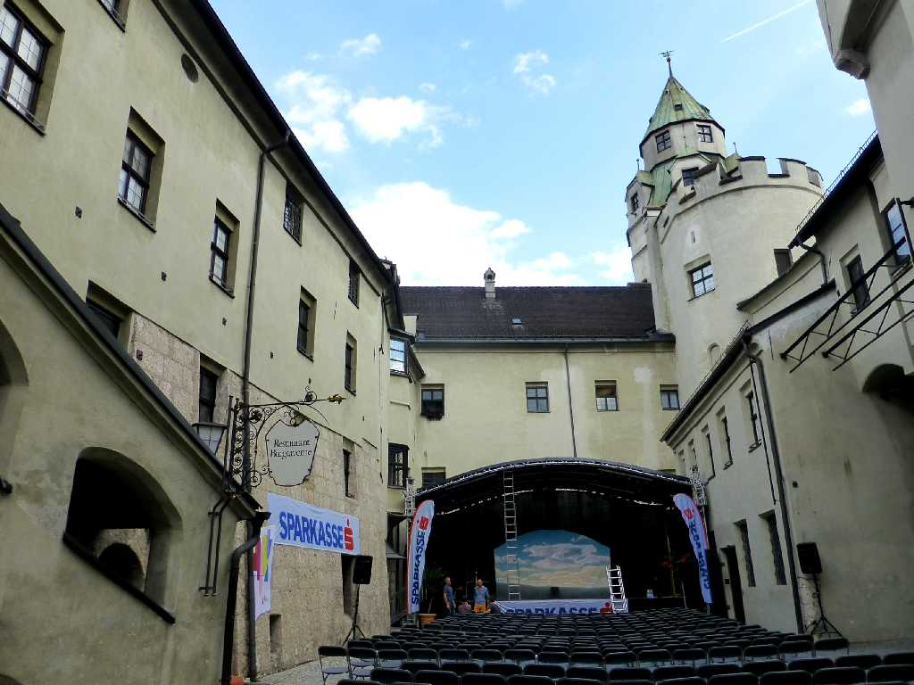
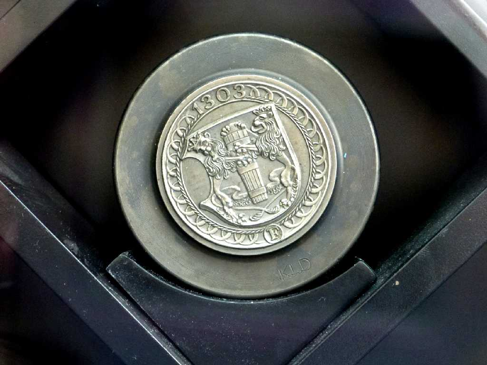
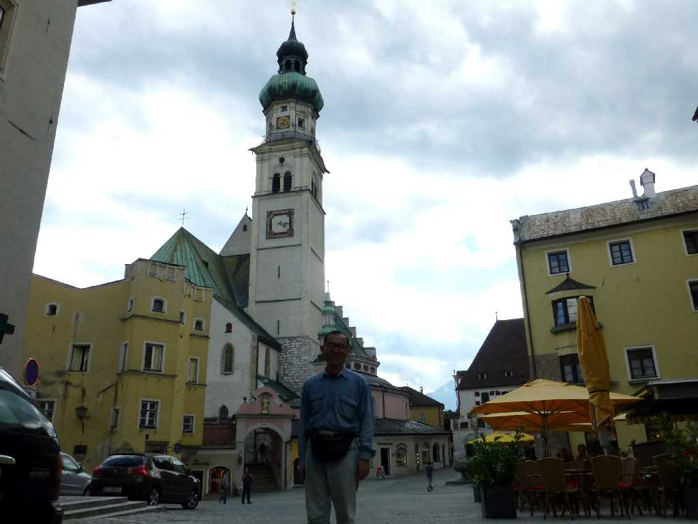

Hall in Tirol
Hallはケルト語で塩を意味し１３世紀頃からチロル地方の塩の採掘場として栄えた

Burg Hasegg Hall in Tirol

Thalar Silbermünzen Hall in Tirol
１５世紀には貨幣製造が始まりヨーロッパ中に百年間も流通したターラー銀貨が製造されるようになり１６世紀には自動化された

June 17 2015 Hall in Tirol